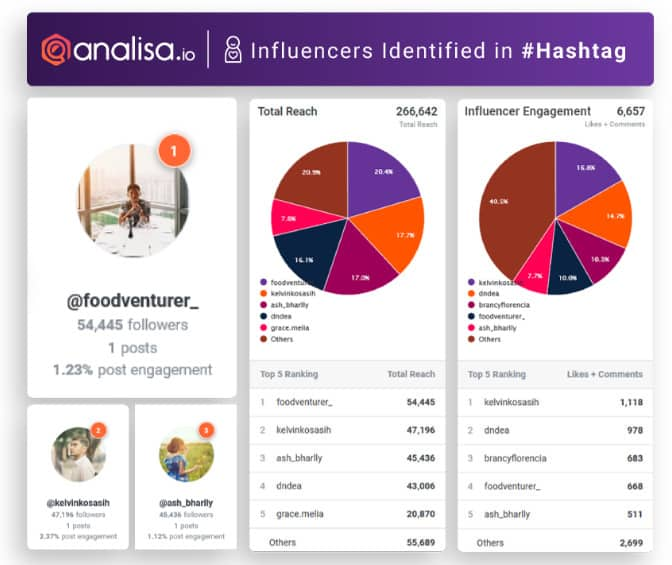
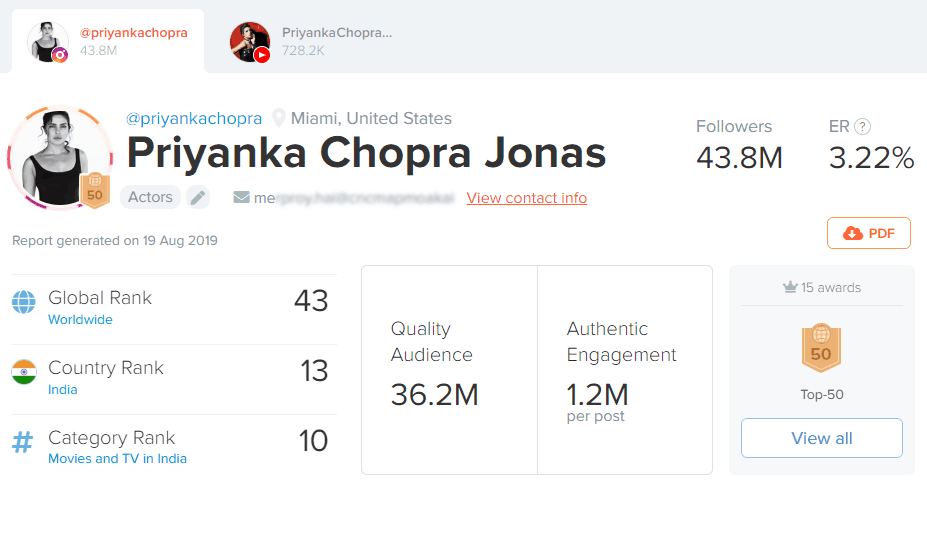
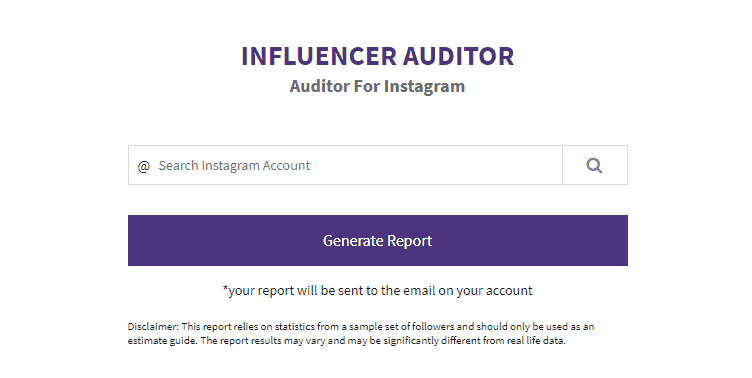
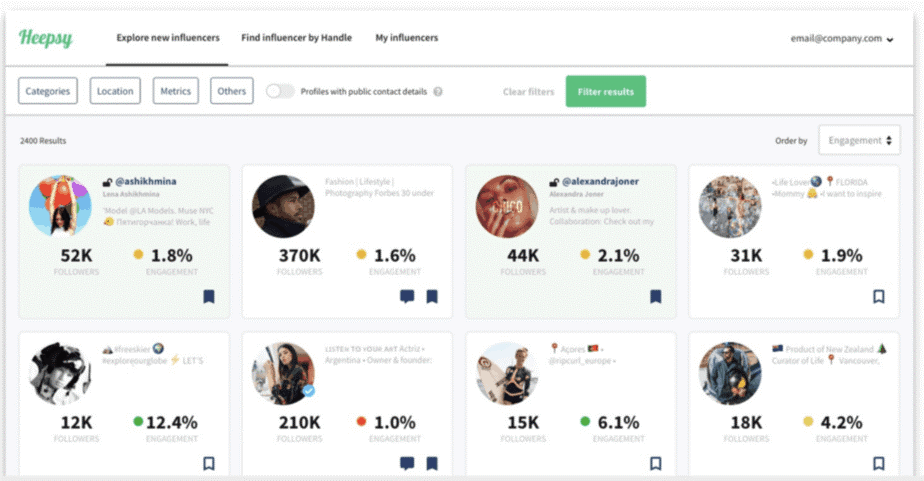

Is it time for you to conduct an Instagram audit?
If you’re worried about fake followers clogging up your Instagram account, then the answer could be “Yes.”
Whether you’ve just started your Instagram campaign, or you’ve been using Instagram for several years, an Instagram audit can be a valuable tool. Used correctly, an audit is your opportunity to make sure that you’re pursuing the right goals with your posts.
There are Instagram auditor tools available today to help you examine every aspect of your profile. They look at things from the content that you produce to the hashtags you use and more. Today, we’re going to be focusing on how you can conduct an audit. We’ll also show you how to clear your follower community of any #Fakers that could be ruining your digital reputation.
Using Instagram Auditor Apps to Banish Fake Followers
Despite Instagram’s best efforts to banish fake followers, not all of the people following you are guaranteed to be genuine.
So, why is that a problem, you ask?
At first glance, fake followers don’t seem so bad. After all, they add more volume to your Instagram follower count. This can help your brand to appear more authoritative on Instagram. According to MediaKix, the demand for fake followers is increasing, with purchasing levels growing by 71% between 2017 and 2018.
However, Instagram users (the real ones) tend to have an incredible eye from separating the real superstars on Instagram, from the fakers. If you have too many inauthentic people in your community – your fans will begin to assume that you’re not a trustworthy brand.
As your real followers disappear, leaving you with only the #Fakers to rely on, your Instagram engagement levels will suffer, reducing your chances of appearing on the Insta Explore pages. What’s more, if Instagram’s team notices that something isn’t quite right with your engagement, they could become suspicious of your brand and assume that you’re acting against the terms and conditions of the platform. This could mean that you end up getting #Shadowbanned.
An Instagram audit that allows you to get rid of fake followers in your community will improve your engagement levels and enhance your brand reputation online.
Instagram audits and Fake follower checks can also ensure that you know what to look for when the time comes to start working with influencers to grow your account. After all, when you do follow people to help your Instagram profile grow, you’ll need to make sure that those people have something valuable to bring to your business. Since you want to keep your follower count high, but the number of people you’re following low, it’s essential not to waste your engagement on fake accounts.
Conducting a Fake Follower Check on Instagram
An Instagram audit that involves checking for fake followers isn’t as simple as it seems.
Most auditing strategies come with basic quantitative metrics to consider. For instance:
- You can audit your content by looking at the number of likes and comments you get on each post. The more engagement your content has, the more you can assume that it’s popular among your target audience.
- You can audit your brand persona by making sure that you use the same language and tone in all of your content. If your posts use different filters or seem like they were designed by different people, you know you have a problem with consistency.
- You can audit your follower growth by using your Instagram analytics to see how many people you’ve attracted to your profile over time. If you’re consistently pulling new customers your way, then your growth strategies are working.
Conducting a fake follower check isn’t as straightforward. You can’t just use numbers and statistics to make decisions. You’ll need the right tools to help you.
Identifying Fake Followers: The Manual Option
One of the simplest (but most time consuming) ways to conduct an Instagram audit on your followers, is to start browsing through the profiles of the people who agree to follow you.
More often than not, a manual fake follower check will help you figure out which of your fans are real, and which are just bot accounts trying to increase follower numbers for another business or influencer. As you browse through the accounts of your followers, keep an eye out for the following red flags:
- No profile picture: This is an obvious sign of an account that’s been created for numbers only. One of the first things any user will do on Instagram is add a profile picture. Remove anyone from your Instagram list that only has a grey silhouette.
- A poor username: While sometimes, a bad username is just bad luck, it can also be the sign of a fake follower. Names like “Susan2394378” suggest that you’re dealing with a bot account. Avoid following these people, and make sure that you don’t work with influencers that a lot of followers with number-based names too.
- Unusual follower/following ratio: Most of the best influencers and brands on Instagram have a large number of followers, but they’re also only following a specific selection of people. While following relevant accounts can help you to earn new followers, real people should have between 30-50 followers for every ten people they follow.
- Lack of online presence: If you’re unsure about someone on your follower list, try typing their name or @handle into Google. If nothing shows up beyond their Instagram page, then there’s a good chance that you’re not dealing with a real person.
- Limited content on Instagram: Not everyone will be as active on Instagram as you are. However, if the person you’re looking at has absolutely no material on their account, then they’re not a valuable addition to your follower list.
The Best Tools for a Follower Focused Instagram Audit
Following fake accounts or working with influencers who don’t have real engagement won’t help you accomplish much on social media. At the same time, a community that’s full of fakes convinces the Instagram algorithm that your business is suspicious.
Getting rid of fake followers through an Instagram audit is one of the best ways to protect your business . However, manually checking the authenticity of each person on your list would take a lot of time .
It’s much easier to use an Instagram auditor instead.
An Instagram auditor app does the hard work for you, scoring each account’s authenticity based on conditions. Here are just some of the tools that can help you to conduct a more effective Instagram audit.
1. Analysa.IO
Analysia.io is a popular Instagram auditor which provides plenty of useful insights into your social media campaigns. You can enter the name of any Instagram user to get in-depth reports on their engagement levels, tagged relationships, and follower demographics. There’s also the option to use the app to discover influencers and top-posting brands based on your individual needs.

Analysa.IO is an app that’s helpful for companies who want to make sure that they’re following the most valuable people on Instagram. After all, the right follows turbocharge your chances of growth. You can try the basic version of the tool for free, or there’s a paid option available of you need more features too.
2. HypeAuditor.com
HypeAuditor is an easy-to-use Instagram auditor and YouTube analytics tool. As well as checking for fake followers on your account and examining the authenticity of influencers that you want to follow, this service can also help you track your engagement and audience growth levels. If you want additional insights, you can also rely on HypeAuditor for information on what kinds of posts your followers are most interested in.
While the first report you get on HypeAuditor.com is free, you’ll need to payafter that. The good news is that the service is quite affordable. It’s well worth the money if you’re worried about losing your Instagram reputation due to fake followers.

3. Iconosquare Auditor
Iconosquare is a popular Instagram tool, designed to help businesses get the most out of their campaigns by allowing them to schedule posts according to a consistent calendar. For those who want to conduct a fake follower check, or find a great influencer, Iconosquare also provides an auditing tool.
All you need to do is connect your Instagram account to Iconosquare, and the service will send you a complete review of your account.
The report you get will outline where you’re achieving great results on Instagram, and where you aren’t. It also provides an insight into any fake followers or bot accounts that could be holding you back.
Crucially, you will need an Instagram business account to conduct an audit with Iconosquare. However, it’s easy enough to switch if you’re still using a personal profile.
4. Phlanx
Phlanx is a software solution for Instagram best-known for the state-of-the-art selection of engagement analytics tools that they offer. However, you can also use Phlanx as an Instagram auditor too. All you need to do is type your Instagram account handle or name into the search bar on the Phlanx website. From there, you’ll be able to see which fake bots are dragging your engagement rate down.
You can use this service to check the authenticity of any Instagram influencers that you want to work with too.

One of the great things about Phlanx is how many additional tools they offer aside from an Instagram auditor. You can use the service to track down influencers, find collaboration opportunities. It’s also great for calculating Instagram, YouTube, or Facebook engagement levels over time.
The only downside is that if you want the full benefits of Phlanx, you need to pay for them. An account costs around $25 per month.
5. Heepsy.com
Finally, Heepsy is an excellent Instagram auditor for businesses that need help evaluating their own follower list or tracking down a great potential influencer. Thissoftware was designed for larger companies that can’t afford to waste money on working with fake influencers. You can search for possible people to work with based on their niche, location, and more.
You can also use Heepsy to ensure that you’re not about to face any problems with the Instagram algorithm.
If you search for your own account and find that there are fake followers on your list, you’ll be able to remove them. Then you can focus on building your profile with genuine, authentic engagement.

Unfortunately, the free version of Heepsy does come with a lot of limitations. If you want in-depth insights and statistics, it’s worth switching to the paid option.
Don’t Underestimate the Instagram Audit
An Instagram audit can deliver benefits to your brand in many different ways.
Used correctly, your auditing tool can tell you which of your hashtags generate the most followers. It can also tell you what kind of content you need to publish to get more engagement. You can even use auditors to conduct a fake follower check and make sure that you’re not wasting your time and effort on bot accounts.
With a regular Instagram audit, you’ll be able to rid your Instagram account from any fake followers. What’s more, you’ll be able to make sure that you’re not following any fake influencers or people who can’t help your brand to grow. Don’t miss out on your opportunity to design a better Instagram strategy with an Instagram auditor.
Remember, if you need help generating real authentic followers for your Instagram account, you can always reach out to Social Follow too! We’ll help you to design a social media strategy that works!